美股 半导体打爆，还能玩吗？AMZN、MSFT为何大涨？NVDA、TSM、GOOG、ISRG持仓计划！本期重点12 组 · 45 条市场与政策4半导体与 SOXX6NVDA4TSM3大型云厂商3MSFT3AMZN4GOOG6META3国防、消费与医疗2ISRG4QQQ / SPY3市场与政策指数对冲解除与半导体下跌并存，州级审批影响增长兑现。4 条对冲解除VIX 大幅回落至约 16，仓位约束随之松动，推动四大指数全部上涨。道指上涨约 3%，纳指涨幅不到 1%▶回听00:09—00:48对应正文 ↗板块分化费城半导体指数下跌超过 3%，30 只成分股中只有 4 只上涨、26 只下跌。▶回听00:28—01:08对应正文 ↗规划容量相关州合计约占美国计划数据中心容量的 46.6%，其中德州约占 26.7% 口述为约45%与25%；属于潜在受约束容量，不表示全部取消。▶回听03:43—04:17对应正文 ↗兑现时间若建设迟迟不能推进，需求即使存在，资本支出、硬件交付与回款也可能被推迟。▶回听04:17—05:28对应正文 ↗半导体与 SOXX需求未消失，预测尚未趋势性下调，信用与估值仍要逐股筛选。6 条信用压力数据中心 CDS 篮子，盘中一度创下历史新高，图中数值约为 463.1。▶回听04:35—05:10对应正文 ↗预期重估市场正在剧烈调整半导体增长预期，还不能把它写成已经出现趋势性的 EPS 大幅下调。▶回听07:14—08:05对应正文 ↗ETF两重逆风各公司的信用质量不同：有的公司跌到合理位置后会被重新买入，信用较弱的公司却未必起得来，指数内部会互相拉扯。▶回听08:11—09:16对应正文 ↗回款链条原本集中在 2027 年的高增长，可能被摊到后面几年，压低短期增长预期。▶回听09:11—09:55对应正文 ↗筛选标准信用质量较好，而且价格没有超过一年期前瞻估值上限▶回听09:56—10:42对应正文 ↗SOXX点位若 436—443 失守，图中下看 368 美元及其下方，348—368 美元为较强区域。 上方486—536已破，突破再观察反转。▶回听05:28—06:26对应正文 ↗NVDA174是技术处理的触发线；减半仓位是条件计划，未提前执行。4 条风险分界是否触发技术性处理，以开盘价或收盘价跌破 174 为观察标准。 重点区域174—194，图中细分174—185与187—194。▶回听11:18—11:52对应正文 ↗保守估值20—30 倍的保守口径，2027 年 1 月前瞻约为 186—279 美元，中位约 232 美元；2028 年 1 月约为 314—472 美元。▶回听12:18—12:48对应正文 ↗下方层级168—173 中等区域、156—159 较小区域及 132—150 较强区域 跌破174后快速重回上行的预期减弱，不能把支撑同等对待。▶回听12:59—14:10对应正文 ↗个人持仓计划若触发跌破 174 的条件，将现有约 10% 的 NVDA 仓位减掉一半，降至约 5%，待下方止跌后再买回。▶回听13:20—14:37对应正文 ↗TSM两档位置加仓计划不变，进入价格区间后仍需止跌确认。3 条分档计划360—378 美元，以及 320—350 美元。两个区域都需要出现较好的止跌形态，才考虑执行。 图示计划分别约2%与4%组合仓位；不是到价就自动买入。▶回听14:49—15:10对应正文 ↗价格与产能以约 15.5 倍估值对应约 20%—30% 增长，在我的判断中具有较好的价格条件。▶回听15:11—15:41对应正文 ↗年度与支撑2027 年约 333—614 美元、中位 474 图中360—378、320—350为较强支撑，年度模型与技术区间分开。▶回听15:11—15:41对应正文 ↗大型云厂商算力供给受限，可能促使需求向已有规模与信用优势的运营商集中。3 条信用分化超大规模数据中心 CDS 曲线末端从高位回落；这与前面数据中心篮子创盘中新高的画面并不相同。▶回听15:55—17:03对应正文 ↗需求与单价现有超大规模运营商就可能承接这部分需求。当新增算力受到约束、计算能力更稀缺时，它们还可能以更高单价出售服务。▶回听17:09—17:43对应正文 ↗当日市场表现当天 MSFT 与 AMZN 均上涨超过 6%，GOOG 上涨超过 3%。▶回听17:44—18:11对应正文 ↗MSFT持仓已建立，600上方再讨论减仓，价格判断不等于期权获利条件。3 条量价与区域放量、收盘价创历史新高，走势很强。534 美元下方只给了几天低吸机会，随后再次走高▶回听18:43—19:04对应正文 ↗年度前瞻2027 年 6 月前瞻约为 465—623 美元，中位 544；2028 年 6 月约 555—744 美元，中位 650。 600上方再讨论减仓；目前持有，暂无立即加减仓计划。▶回听19:30—19:48对应正文 ↗期权时间条件何时到达、期间是否先跌后涨都不能确认，而期权有到期日，方向判断不能替代时间判断。▶回听19:14—19:29对应正文 ↗AMZNV形反转后重视趋势；2027负同比受一次性投资收益基数影响。4 条趋势变化连续三天跳涨，已经越过原有主要强压力，形成 V 形反转、冲击前高的走势▶回听20:13—20:36对应正文 ↗上影线判断放量且收盘处于近期高位，不能仅凭上影线就认定是有效、强烈的滞涨见顶。 图示近端258—266，中下方244—256、227—240与217—224。▶回听21:04—21:17对应正文 ↗一次性收益剔除 2026 年这项一次性投资计价后，2027 年仍是同比正增长，不能把表面的负增速直接理解成经营衰退。▶回听21:24—22:04对应正文 ↗年度估值2027 年约 250—336 美元，中位 293 采用23.5—31.5倍；260多美元接近年度估值下沿。▶回听22:19—22:41对应正文 ↗GOOG估值下限与技术压力并存；轻重仓、成本与操作能力决定不同安排。6 条财报条件暂时还不能确认是短期波动，还是趋势性走弱；股价则已经跌破数档强支撑，形成较大上方压力。▶回听22:54—23:23对应正文 ↗更正后的估值2027 年为 299—449 美元，中位 374。2027 年下限是 299，图上误写的 399 是本期口述已更正的笔误。▶回听23:42—24:22对应正文 ↗支撑与确认275—291 美元中等区域，以及 240—257 美元较强区域 上方298—308、311—325、329—348；突破348再观察趋势确认。▶回听24:31—25:05对应正文 ↗高位重仓防守反弹接近 298 一线起的数档强压力，若出现放量滞涨，先减部分仓位，为四季度财报可能不及预期留出防守空间▶回听25:30—26:22对应正文 ↗突破后的回补直接突破 348 美元。那时即使回补价格高于先前减仓价，交易的依据也发生了变化 另一条路径是回落至下方两档再评估；两者是不同的风险安排。▶回听26:23—27:07对应正文 ↗个人安排与风险没有新增低吸计划，选择持有一个季度，接受短期技术压力和震荡。 既定仓位已建完；四季度广告若继续走弱，仍将压制上行。▶回听25:07—25:28对应正文 ↗META500—630是长线框架，短线波段另守580。3 条年度估值2026 年前瞻约 499—1017 美元，中位 758；2027 年约 570—1162 美元，中位 866。▶回听28:25—28:46对应正文 ↗长线评估约 500—630 美元，最近的一档是 580—630 下方图示556—570、480—535、454—471等区域。▶回听28:48—29:15对应正文 ↗波段避险如果只是做短线投机或波段，跌破 580 美元后要考虑技术性避险。▶回听29:16—29:53对应正文 ↗国防、消费与医疗政策预期在交易，企业利润是否兑现仍要验证。2 条国防增量预期潜在利好减弱；涉及乌克兰的部分仍可能变化。但国防预算长期趋势并不因此自动转为空头▶回听30:11—30:47对应正文 ↗消费与医疗目前属于金融市场的政策预期，不能写成企业利润已经得到真实上调。▶回听30:48—31:43对应正文 ↗ISRG470—500上沿观察滞涨，500突破之后才考虑新的趋势框架。4 条波段安排若在这一带出现滞涨形态，可以考虑先兑现部分利润；回落到 458 美元下方，再评估买回。 震荡上沿470—500，争取约7%—10%价差，不是转为长期看空。▶回听32:00—32:42对应正文 ↗结构突破越过 500 后有望进入更大的结构性上行，低点和高点逐渐抬高▶回听32:43—33:15对应正文 ↗下方支撑430—458 美元强支撑、370—405 美元较强区域，以及 321—360 美元较强长线区域。 约四成回撤只属于极端震荡路径，中间仍有支撑。▶回听33:16—33:35对应正文 ↗个人安排当前不打算来回做这一段波段。如果未来真正突破 500，结构性趋势发生改变，我才会考虑适度提高后续的加仓评估位置▶回听33:35—34:11对应正文 ↗QQQ / SPY标普结构较完整，纳指反弹仍受强压力约束。3 条QQQ压力696—728 美元强压力区未被收复前，很难确认更大的上行空间。 图示687—694失守进一步确认空，下看668—681、642—664等。▶回听34:34—34:53对应正文 ↗SPY结构759—776 美元为较强区域，上沿约 776 附近仍是需要观察的位置 下方728—753、702—710、671—694，结构相对完整。▶回听34:53—35:15对应正文 ↗资金方向资金在板块之间轮动，而不是全部撤离股票市场。▶回听35:16—35:32对应正文 ↗这期涉及哪些股票与内容？NVDA主讲174风险分界、两套年度估值，以及10%仓位触发后减半的个人计划。TSM主讲360—378、320—350加仓区，等待止跌，产能与定价权。MSFT主讲收盘创新高、2027年6月465—623，600上方再讨论减仓。AMZN主讲V形反转、2027前瞻250—336，以及一次性投资收益的同比基数。GOOG主讲广告与云业务、2027更正下限299、两档支撑及348突破条件。META主讲580—630近端长线区域、500—630框架与580波段避险。ISRG主讲470—500震荡上沿、458下方回补评估及500结构突破。SOXX主讲ETF内部信用差异及436—443支撑、486—536反转区域。QQQ主讲696—728强压力未收复前仍按反弹看待。SPY主讲759—776较强区域与相对完整结构，资金轮动支撑。AMD对比回顾财报后盘中涨幅回吐，本期未重新展开估值或持仓计划。背景提及：ASML、CRWV、NBIS。市场指标：VIX、SOX、SPX、CDS。背景提及不代表对该股票展开分析。CHAPTER 01 · 回听 00:00指数风险解除，半导体仍在独立下跌美东时间 2026 年 11 月 4 日晚，中期选举结果落定，民主党横扫国会。11 月初最受关注的风险事件结束后，标普相关对冲保护解除，VIX 大幅回落至约 16，仓位约束随之松动，推动四大指数全部上涨。道指上涨约 3%，纳指涨幅不到 1%，表现最弱。科技板块内部的分化非常明显。费城半导体指数下跌超过 3%，30 只成分股中只有 4 只上涨、26 只下跌。周期敏感型股票走强，半导体资金却在流出。标普层面的对冲风险解除，不等于所有股票都将普涨；即使指数维持高位，持仓集中在弱势方向，账户也可能继续承压。当前的核心问题，是选举结束后如何重新定位数据中心与半导体的增长预期。讨论重点需要从“指数会不会涨”，转向政策怎样影响建设进度、信用条件与订单兑现，以及资金正在选择哪些公司。CHAPTER 02 · 回听 02:35数据中心的约束，更多来自州和地方层面根据本期引用的高盛分析，联邦层面短期内并不容易改变人工智能与数据中心的法律监管前景。相关法案需要两党支持，总统也可能行使否决权，推翻否决又需要更高的票数。因此，联邦立法可能陷入僵局，但这不意味着州与地方层面的建设审批会同样顺利。德州迎来三十多年来首位民主党州长，其竞选主张之一是立即暂停新建数据中心。高盛图表列示，相关州合计约占美国计划数据中心容量的 46.6%，其中德州约占 26.7%；口述时分别概括为约 45% 和约 25%。这反映的是潜在受约束容量，并不等于这些容量已经全部取消。更重要的是暂停和拖延会持续多久。目前无法给出确定时间，也不能将潜在限制理解为永久否定数据中心。若建设迟迟不能推进，需求即使存在，资本支出、硬件交付与回款也可能被推迟。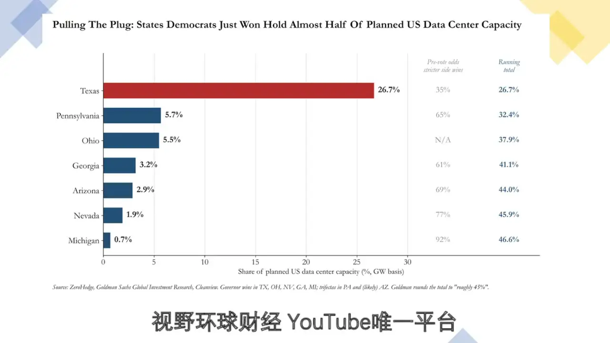放大查看 ↗数据中心规划容量：州与地方限制的潜在影响原视频 03:55回听此处CHAPTER 03 · 回听 04:28半导体逆风：信用质量、兑现时间与 ETF 的拉扯本期展示的数据中心 CDS 篮子，盘中一度创下历史新高，图中数值约为 463.1。仍需大量投入建设的新云数据中心承压，CoreWeave、NBIS 等股价走低。市场担心建设受限，使原定资本开支无法按期落地，进而削弱半导体、光通信和存储等硬件公司的需求兑现速度。半导体连续走低，并没有跟随四大指数反弹。AMD 盘中一度上涨约 6%，盘前曾达到约 7%，收盘只保留约 1% 涨幅；NVDA 当天下跌约 3%，TSM、ASML 等龙头也在下跌，盘后仍承压。高增长预期已经支撑了较高股价，建设拖延越久，未来 EPS 下修的风险就越大，提前透支增长的股票也更容易被压价。需要分清预期交易和已经发生的业绩变化：截至本期，市场正在剧烈调整半导体增长预期，还不能把它写成已经出现趋势性的 EPS 大幅下调。卖方调研与预测调整需要时间，我会继续监控龙头 EPS 是否出现实际的趋势性变化。直接买半导体指数 ETF，也需要重新考虑两重逆风。第一，各公司的信用质量不同：有的公司跌到合理位置后会被重新买入，信用较弱的公司却未必起得来，指数内部会互相拉扯。第二，硬件生产出来却无法安装、交付和回款，原本集中在 2027 年的高增长，可能被摊到后面几年，压低短期增长预期。AI 对半导体的需求仍然存在，关键是哪些公司能够兑现、以多快速度兑现。我的筛选标准仍是信用质量较好，而且价格没有超过一年期前瞻估值上限；价格明显偏高、尚未跌到合理位置的股票，不急于逆势承接。SOXX 原图显示，486—536 美元为已跌破的重要区域，突破才观察反转；近端还有 450—467 美元中等区域，以及 436—443 美元中等支撑。若 436—443 失守，图中下看 368 美元及其下方，348—368 美元为较强区域。这些是图示技术位置，不能代替对行业兑现与信用质量的判断。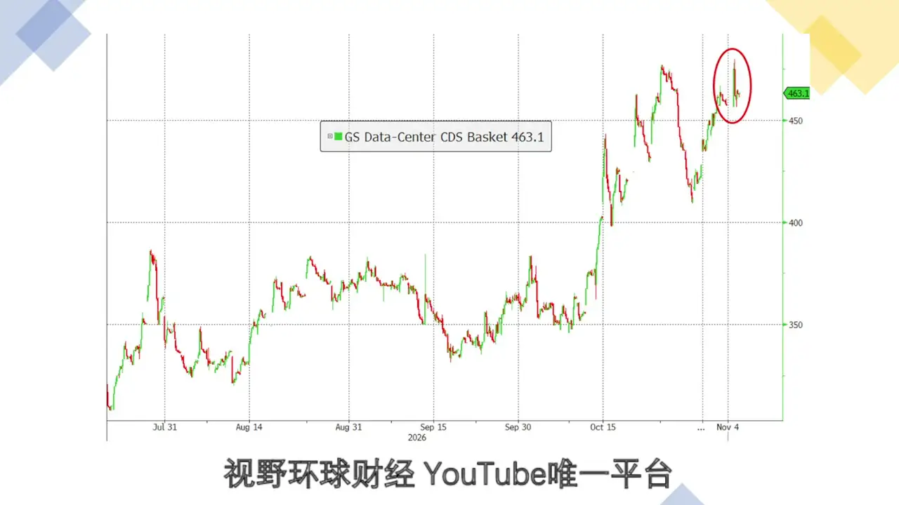放大查看 ↗数据中心 CDS 篮子：盘中新高与信用压力原视频 04:50回听此处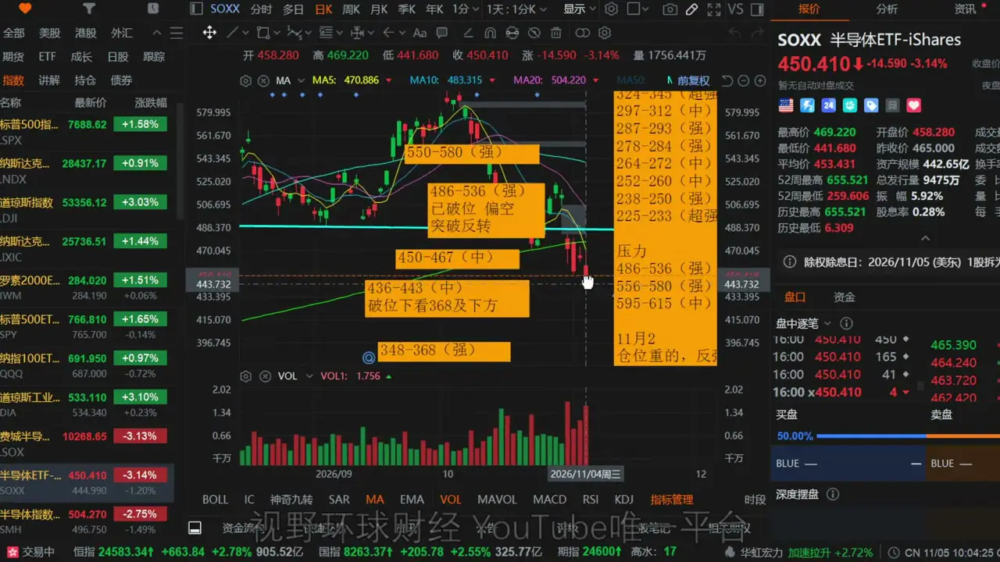放大查看 ↗SOXX：436—443 支撑与 486—536 反转区域原视频 05:40回听此处CHAPTER 04 · 回听 10:57NVDA：174 是技术风险分界，减仓计划有明确前提NVDA 是我的第二大持仓。即使持仓成本较低，这一轮下跌也在持续回吐利润。真正的考验在 174—194 美元一线：图中进一步分成 187—194 与 174—185 两档较强长线区域。原先约 175 的边界下调到 174，是给价格波动留一点冗余；是否触发技术性处理，以开盘价或收盘价跌破 174 为观察标准。估值上，我采用 20—30 倍的保守口径，2027 年 1 月前瞻约为 186—279 美元，中位约 232 美元；2028 年 1 月约为 314—472 美元。若使用 30—40 倍高增长口径，图中相应区间为 279—372 与 472—629 美元。保守口径下的 2027 年下限 186，仍高于 174，这使该区域同时具有基本面与技术面的意义；若盈利预测发生实质下调，估值也需要重算。174—194 一带，在我的框架中既是长线评估区，也是可以衡量止损与潜在收益的波段区域。但若跌破 174，连续强支撑转为强压力，短期快速重回上行的可能性就会减弱，之后可能在下方震荡较久。下方图示还有 168—173 中等区域、156—159 较小区域及 132—150 较强区域，不能把所有支撑视为同等可靠。我的计划是：若触发跌破 174 的条件，将现有约 10% 的 NVDA 仓位减掉一半，降至约 5%，待下方止跌后再买回。这是技术性避险与降低持仓成本的安排，不代表转为长期看空；当时价格仍在约 200 美元，距离触发位还有距离，也不是已经执行减仓。如果下方出现较快下杀，价格到 150—160 美元附近，中间可能有约 10%—15% 的价差。但这只是可能的路径，不是一定会跌到的目标。仓位、成本与是否愿意做波段不同，处理方式也不必相同。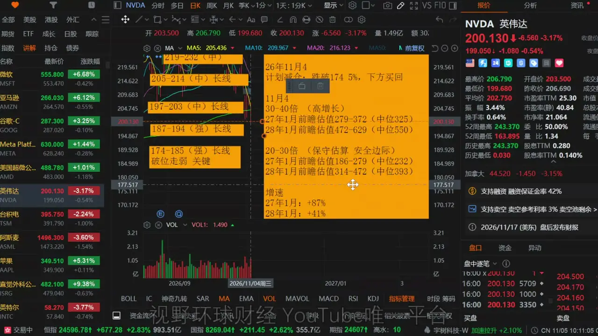放大查看 ↗NVDA：174 风险分界与两套年度估值原视频 12:20回听此处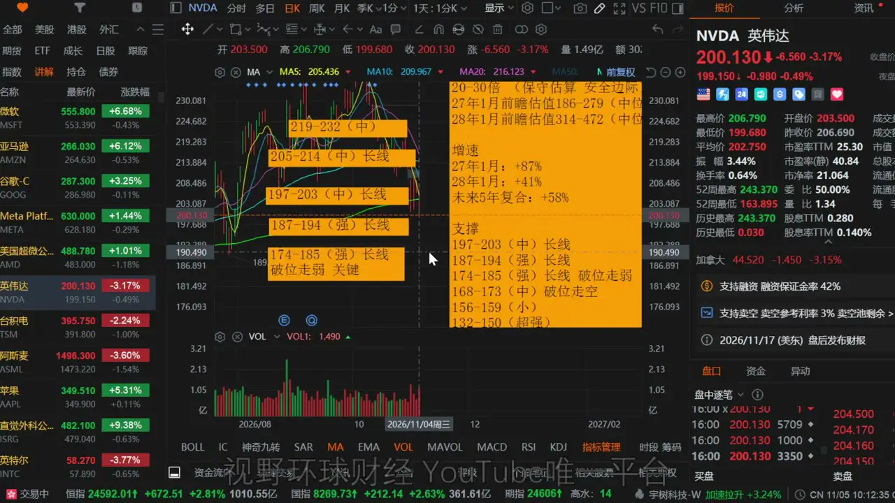放大查看 ↗NVDA：174 下方的支撑层级原视频 13:50回听此处CHAPTER 05 · 回听 14:37TSM：两档加仓区不变，仍要等待止跌形态TSM 的加仓计划保持不变：360—378 美元，以及 320—350 美元。两个区域都需要出现较好的止跌形态，才考虑执行。图中计划分配分别为约 2% 与约 4% 的组合仓位；如果都能落实，TSM 将可能成为仅次于 MSFT 的第二大持仓。我看重的是定价权与产能紧张。即使整体需求有所收缩，TSM 的产能仍可能维持较高利用率，受到的影响未必和一般供应商相同。若价格回到 300 多美元、接近 2027 年前瞻下沿，以约 15.5 倍估值对应约 20%—30% 增长，在我的判断中具有较好的价格条件。原图按 15.5—28.6 倍列示，2026 年前瞻约 258—476 美元、中位 367；2027 年约 333—614 美元、中位 474。技术区域另有 399—406 较强区域、383—396 中等区域、360—378 与 320—350 较强支撑，以及 270—306 较强长线区域。年度估值和技术支撑应分开使用，不能因为进入区间就忽略止跌条件。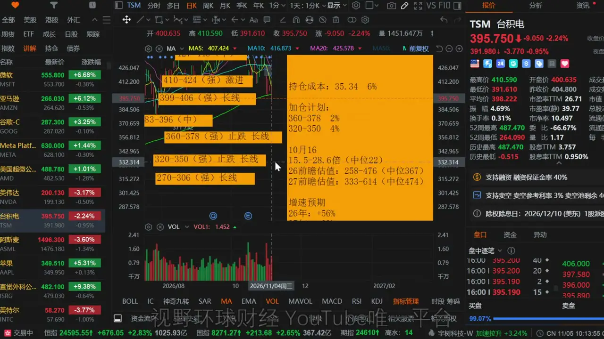放大查看 ↗TSM：360—378、320—350 加仓观察区原视频 15:10回听此处CHAPTER 06 · 回听 15:55超大规模云厂商，为何与新云数据中心走出不同方向整体数据中心 CDS 与超大规模数据中心的信用走势出现分化。本期另一张图中，超大规模数据中心 CDS 曲线末端从高位回落；这与前面数据中心篮子创盘中新高的画面并不相同。CDS 可以理解为债务违约保护成本，其定价提高通常意味着信用担忧增加，下降则意味着担忧减轻；两张图的篮子与纵轴不同，不能直接用点数相减比较。我的解释是：如果新云运营商受建设限制，无法及时满足持续增长的 AI 需求，现有超大规模运营商就可能承接这部分需求。当新增算力受到约束、计算能力更稀缺时，它们还可能以更高单价出售服务。因此，建设限制对硬件与新云供应商是逆风，对已有规模与资源的云厂商却可能形成另一种定价预期。当天 MSFT 与 AMZN 均上涨超过 6%，GOOG 上涨超过 3%。刚公布的三季度财报中，这几家云服务收入都保持较快增长，我预计云业务仍将是主要增长发动机。GOOG 的额外条件是广告收入：只要四季度没有出现趋势性下滑，我倾向于认为其重返前高是时间问题，但这仍需要下一次财报验证。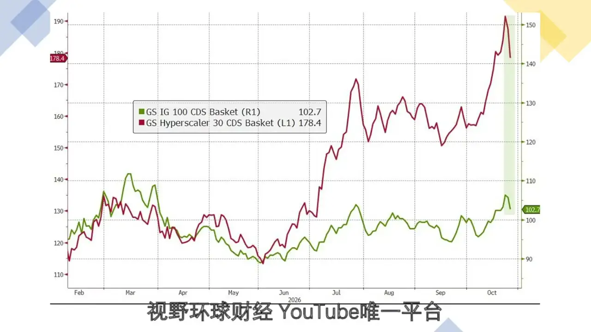放大查看 ↗超大规模云厂商 CDS：与整体篮子的分化原视频 16:40回听此处CHAPTER 07 · 回听 18:38MSFT：收盘创新高，600 上方再讨论减仓MSFT 是我的最大持仓，当天放量、收盘价创历史新高，走势很强。534 美元下方只给了几天低吸机会，随后再次走高；图中 519—534 美元为中等长线区域，490—514 美元为较强区域，再下方还有 469—485、440—461 及 392—435 美元等区域。按 23.5—31.5 倍口径，2027 年 6 月前瞻约为 465—623 美元，中位 544；2028 年 6 月约 555—744 美元，中位 650。我的后续观察仍在 600 美元上方，当时大致还有接近一成的价格空间，减仓也等到 600 上方再讨论。目前的安排是持有，没有加仓计划，也没有立即减仓计划，原因是既定仓位已经建立。看向 600 以上，并不等于看涨期权必然获利：何时到达、期间是否先跌后涨都不能确认，而期权有到期日，方向判断不能替代时间判断。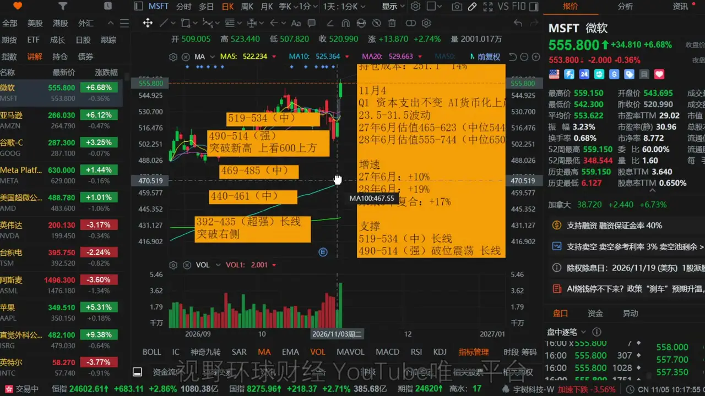放大查看 ↗MSFT：600 上方观察与 2027 年 6 月估值原视频 19:10回听此处CHAPTER 08 · 回听 20:02AMZN：突破强压力后，区分一次性收益与持续增长我目前没有 AMZN 持仓。它连续三天跳涨，已经越过原有主要强压力，形成 V 形反转、冲击前高的走势，期间几乎没有给出完整的整理形态。是否买到最低点已经过去，当前更重要的是趋势发生了什么变化。在这一趋势框架下，我倾向于把回撤视为重新评估参与的机会，持有后减少不必要的来回折腾。当天虽有较长上影线，但放量且收盘处于近期高位，不能仅凭上影线就认定是有效、强烈的滞涨见顶。图中近端 258—266 美元为中等区域，下方 244—256、227—240、217—224 为较强长线区域，上方 270—280 为较小区域。估值口径需要单独说明。2026 年 EPS 一次性加入了投资收益，因此图中 2026 年前瞻快速抬升，2027 年相对 2026 年显示约负 16%。剔除 2026 年这项一次性投资计价后，2027 年仍是同比正增长，不能把表面的负增速直接理解成经营衰退。为与市场口径一致，我按 23.5—31.5 倍列示：2026 年前瞻约 298—399 美元，中位 348；2027 年约 250—336 美元，中位 293。当前更应关注 2027 年，260 多美元的市价接近这一年度的估值下沿；叠加大型云厂商需求和单价的交易逻辑，市场已经给出了一部分重新定价。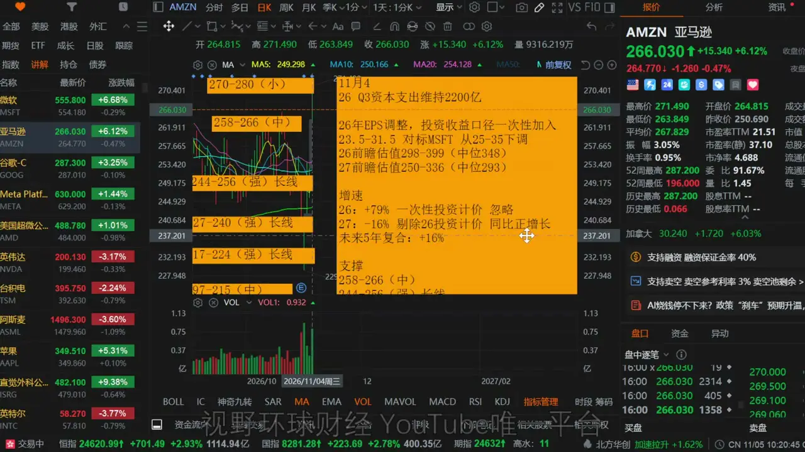放大查看 ↗AMZN：V 形反转与一次性投资收益口径原视频 22:00回听此处CHAPTER 09 · 回听 22:42GOOG：基本面价格不高，技术面与仓位处理要分开GOOG 是我的第四大持仓，也是 MSFT、AMZN、GOOG 三家中技术结构最弱的一只。三季度广告业务出现问题，暂时还不能确认是短期波动，还是趋势性走弱；股价则已经跌破数档强支撑，形成较大上方压力。基本面估值不高，与短期走势承压，可以同时成立。GOOG 同样受到 2026 年一次性投资收益计入 EPS 的影响。按 20—30 倍口径，2026 年前瞻为 399—599 美元，中位 499；2027 年为 299—449 美元，中位 374。2027 年下限是 299，图上误写的 399 是本期口述已更正的笔误。剔除一次性投资收益后，2027 年仍是正增长，不能将图示约负 24% 直接解读为持续经营下滑；约 287 美元的市价接近、并略低于这一前瞻下沿。技术上，下方两档关注 275—291 美元中等区域，以及 240—257 美元较强区域；每档至多考虑一次分批评估，避免在一个位置把预留仓位全部用完。上方从 298—308 美元强压力起，依次还有 311—325、329—348；突破 348 之后，才对应图示趋势进一步确认的观察条件。如果原本轻仓、尚未建仓或最近才小规模参与，我的思路是保留仓位观察至四季度财报，仓位不足时再结合下方两档位置评估。就我自己而言，成本较低、仓位不重，而且分配给 GOOG 的仓位已经建完，所以没有新增低吸计划，选择持有一个季度，接受短期技术压力和震荡。若是在 300、330 或 340 美元一带高位建仓，而且仓位很重，可以采取更保守的技术安排：反弹接近 298 一线起的数档强压力，若出现放量滞涨，先减部分仓位，为四季度财报可能不及预期留出防守空间；回落后再在下方两档重新评估买回。另一种路径是减仓后不再回落，而是直接突破 348 美元。那时即使回补价格高于先前减仓价，交易的依据也发生了变化：从未确认的反弹，转为趋势得到确认后的参与。价格更高不一定意味着风险更大，关键是为哪一种信息与条件支付价格。若重仓又不熟悉技术处理，也不愿反复操作，我更倾向于等待一个季度。支撑这一思路的，是云服务增长和单价改善有望抵消广告业务的压力；但这不是百分之百，如果广告收入在四季度继续走弱、形成连续两个季度的下滑，股价上行仍会很困难。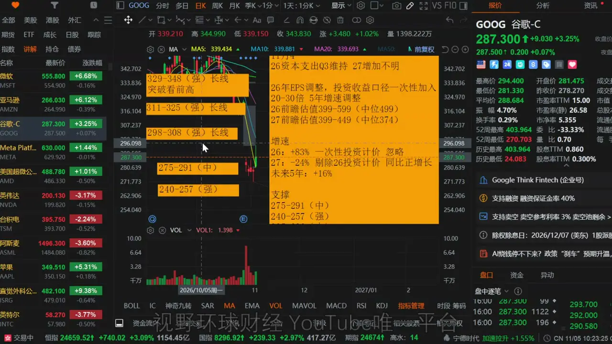放大查看 ↗GOOG：压力、支撑与现场更正的估值下限原视频 24:40回听此处CHAPTER 10 · 回听 28:10META：长线评估区与波段避险线并存META 的近端技术区域整合为 580—630 美元，图中列为超强长线区域，跌破后偏弱。按 16.9—34.4 倍历史参考口径，2026 年前瞻约 499—1017 美元，中位 758；2027 年约 570—1162 美元，中位 866。就这一框架而言，价格接近前瞻下限，不能简单归为估值很高。我的长线评估范围仍在约 500—630 美元，最近的一档是 580—630；更下方图示还有 556—570、480—535、454—471 美元等区域。做基本面长线配置与短线波段，不能采用完全相同的处理方式。如果只是做短线投机或波段，跌破 580 美元后要考虑技术性避险。META 的融资和经营动作往往幅度较大，也可能出现不按常规发展的事件，带来额外股价波动；长期认可价格区间，并不代表波段持仓可以忽略这一条风险线。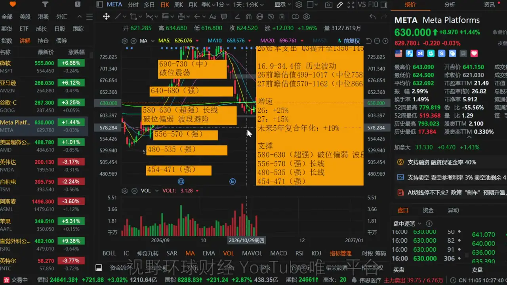放大查看 ↗META：580—630 长线区域与 580 波段风险线原视频 28:55回听此处CHAPTER 11 · 回听 29:57国防、消费与医疗：市场预期不等于已兑现利润选举之后，市场还在交易其他板块的变化。国防类股票原先期待的大幅提升军费、特别是针对伊朗的紧急预算增量，潜在利好减弱；涉及乌克兰的部分仍可能变化。但国防预算长期趋势并不因此自动转为空头，不能把少了一项额外利好，理解成整个行业必然下跌。消费类股票在交易物价趋稳、生活质量改善与消费复苏；医疗保险及医疗类股票则可能交易更多医疗补助的预期。消费和医疗的这些上涨逻辑，目前属于金融市场的政策预期，不能写成企业利润已经得到真实上调。联邦立法仍可能陷入僵局，预期最终能否转成政策、再转成收入，需要继续验证。CHAPTER 12 · 回听 31:46ISRG：470—500 是震荡上沿，突破后再抬高评估位置ISRG 图中长期标注的震荡上沿是 470—500 美元。对于仓位较重、愿意做波段的情况，若在这一带出现滞涨形态，可以考虑先兑现部分利润；回落到 458 美元下方，再评估买回。这个安排争取的是约 7%—10% 的波段价差，不是转为猛烈看空。如果减仓后不跌，反而突破 500 美元，那么回补依据也会变化。我的判断是，越过 500 后有望进入更大的结构性上行，低点和高点逐渐抬高；在突破之前，上沿压力仍可能把价格压回原震荡区间。下方原图列有 430—458 美元强支撑、370—405 美元较强区域，以及 321—360 美元较强长线区域。极端情况下，震荡下沿与当时价格可以有接近四成的距离，但中间仍有数档支撑，不能把极端路径当成必然发生的跌幅。我自己的仓位不大、成本也不高，七月份已在 350 多美元附近加过仓，因此当前不打算来回做这一段波段。如果未来真正突破 500，结构性趋势发生改变，我才会考虑适度提高后续的加仓评估位置；在突破发生之前，不提前抬高原有买入范围。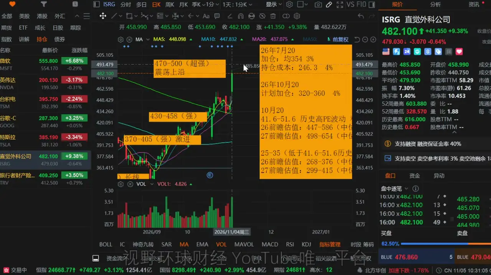放大查看 ↗ISRG：470—500 震荡上沿与 458 回补观察原视频 32:20回听此处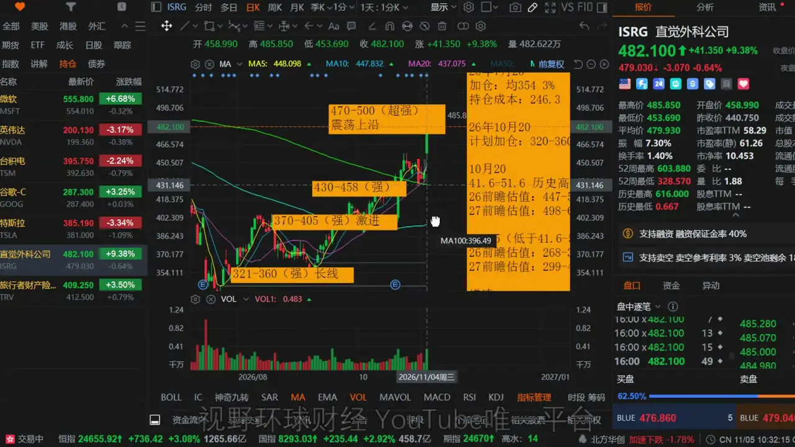放大查看 ↗ISRG：震荡区间与下方长线支撑原视频 33:30回听此处CHAPTER 13 · 回听 34:34QQQ 与 SPY：资金轮动，不能用一个指数代表全部市场整体市场的主要压力仍在纳指方向。QQQ 在破位之后暂时按反弹看待，图中 696—728 美元强压力区未被收复前，很难确认更大的上行空间。下方图示 687—694 美元中等区域，失守后空头得到进一步确认；再下方依次为 668—681、642—664、617—635 和 585—610 美元等区域。SPY 相对扎实，本轮回撤没有造成同等程度的结构破坏，图中 759—776 美元为较强区域，上沿约 776 附近仍是需要观察的位置；下方另有 728—753、702—710 及 671—694 美元等区域。VIX 回落与对冲保护解除，使资金流向半导体及部分科技之外的板块，也为标普提供支撑。当前更像资金在板块之间轮动，而不是全部撤离股票市场。判断持仓时，需要同时看行业兑现、信用质量、估值年度与技术条件，而不是仅凭指数上涨就推定手里的股票也会同步修复。未在本期提到的个人持仓，原有安排保持不变。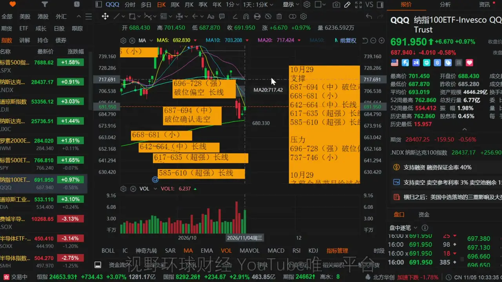放大查看 ↗QQQ：696—728 强压力与下方支撑原视频 34:50回听此处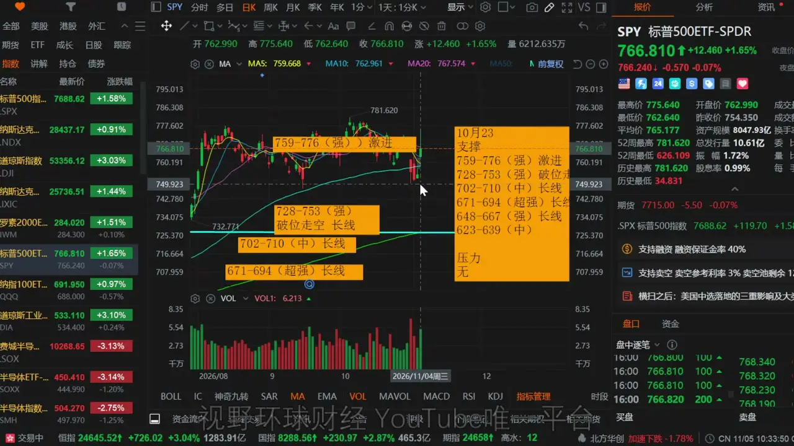放大查看 ↗SPY：759—776 区域与较完整的结构原视频 35:05回听此处SOURCE MATERIAL完整转录与回听原视频：美股 半导体打爆，还能玩吗？AMZN、MSFT为何大涨？NVDA、TSM、GOOG、ISRG持仓计划！机器原稿可能含同音字与数字单位错误，保留用于对照。播放00:0036:031×1.25×1.5×2×静音展开完整转录下载 TXT ↗下载 SRT ↗查找转录内容00:00大家好,欢迎回到视野环球财经,我是Ryno。现在是美东时间,26年11月4号,周三晚上的8点45分。00:09随着中期选举的尘埃落定,民主党横扫国会,11月初最大的风险事件已经结束,标普的对冲保护策略解除,Wix也是大幅回撤到了16,仓位松绑,所以今天是推动四大指数全部上涨。00:28其中道指的表现最好是大涨了3%,纳指最弱,上涨不到1%。科技板块的分化是比较明显的,半导体表现得非常的差,费城半导体是下跌超过了3%,30只成分股只有4只上涨,26只下跌。00:48所以这里提醒一下,标普的对冲风险解除只是标普,它的代价是周期敏感型股票大涨,半导体大幅的吐血下跌,反补其他。01:03所以标普的风险解除不代表全市场所有的股票后面都要普涨。01:08如果是错误的持仓,后面标普即便停在高位不跌,你的仓位很有可能还是继续的熊市。01:18那么最近的这个节目呢,我的分析是更多的集中在科技股半导体上比较多,因为这是市场的一个核心,也是一个大波动发生的地方。01:28大家持仓也比较的集中啊,像什么其他的个股和板块我讲的比较少啊,请大家见谅。01:34因为呢,咱们要先照顾大多数人的这个目前的一个持仓的情况。01:39而且呢,毕竟这个时间有限,我的精力也有限啊,一次性讲不了那么多。01:44那么以后的节目呢,我会再给大家慢慢的补充。01:49好,那么今天的这个节目,咱们从哪里开始讲呢?01:53我还是跟大家提前把这个重要性说一下啊,让大家好好听一下。02:00今天的分析呢,是中期选举结束之后,第一次对半导体的行业数据中心重新定位的逻辑分析。02:11包括呢,有一些市场在中期选举之后正在炒作的板块,请大家一定要仔细的听啊。02:20如果一遍没听清,大家可以多听几遍,或者呢,把节目的语速你可以放慢一些,然后多听几遍哈。02:29好,那咱们呢,先话少叙,直接开始今天的主题。02:35首先呢,我们要看一个东西,就是数据中心。02:43根据高盛的统计啊,由于民主党横扫国会,那么在联邦的层面,首先,昨天我们也讲过,那么在联邦层面的结果呢,是不太,不太可能在短期就去改变数据中心和人工智能在法律层面的这个监管的前景。03:01因为相关的法案呢,仍需要获得参议院,这个参众两院的两党支持,才能够通过。03:09那,而且呢,因为总统这边,他可能会行使这个否决权吧,所以呢,即便两边通过总统否决权,那打回到两院,要有绝大多数的票数,才能够推翻总统的否决权。03:22所以这个本来就比较难,但是呢,联邦层面不通过,不代表着在州和地方层面,数据中心的建设,它就会比较的顺利啊。03:35我们知道德州呢,是三十多年来,首次已经来了第一位民主党的州长,它的竞选的核心纲领,就是立即暂停新建数据中心。03:47那么,根据高盛的这张图表显示,民主党呢,是有可能进一步限制数据中心建设的几个州,总体加起来,约占到美国计划数据中心总容量的45%,其中仅德州就占了25%,那这个情况呢,是比较容易发生的,那么后面我们需要去关注的是,这种暂停数据中心的停滞,会持续多久?04:17现在我相信没有人能知道,对吧,这个是我们要关心的一个问题,但是呢,大概率会在目前的情况下会停滞,很多都会停滞。04:28好,那我们就结合着今天的盘面,再先来看一下。04:35由于担心新的数据中心建设的禁令啊,今天我们看到,数据中心的信用违约互换CDX呢,在盘中的时候,创下了历史新高。04:48目前呢,还在大规模投入和建设的新的云数据中心的股价承压,像什么COVE,像什么NBIS,股价都是走低,对不对?05:01大家看到了很多类似的股票,包括什么光啊,包括存储啊,半导体等等。05:07那大家说,那数据中心建设半导体为什么走得这么差呢?05:11那也是这个原因吧,数据中心扩容被限制了,你这个钱花不出去,你是不是变相削弱了资本支出啊?05:19那么你这些硬件的制造商,你当然就表现不佳了,这个就是半导体逆势下跌的最主要原因。05:28所以呢,我在这里再次强调一下啊,我们还是拿着半导体的这个图表来看。05:39最近呢,是连续的在创新低,连续的再往下走,即便大盘走得好,四大指数在上涨,但半导体依旧是独立下跌。05:52那么在半导体股票中,凡是在高增长预期下,我们知道之前呢,股价不是维持得很高吗?很多。06:00凡是价格偏离的越多的股票,那么数据中心禁令拖延的越久,那么半导体的高的EPS的增长预期就越有可能往下调,那么这个股价就会被压制的越狠。06:17这个是我们说大家一定要注意的啊,因为现在是一个拖延的问题,可能不一定会全盘否认,否定数据中心,但是要拖。06:27那么昨天呢,你看,比如我们讲到了几只股票啊,比如我们昨天说MD,MD你看它的盘中啊,它都涨了还是不错的,对吧?06:41最高的时候曾经跑到过六个点,结果呢,收盘的时候只涨了一个点,大多数涨幅都被吃光了,盘前的时候最高还跑到过七个点。06:51那么盘后呢,现在是接着跌,英伟达,英伟达呢,是完全没有拖泥带水,对吧?直接是原地今天下跌了三个点。07:03你包括还有像台积电,阿斯曼,这种龙头它也是在往下掉,盘后呢,也都没有止住,大家还是在跟着下滑。07:14其实呢,为什么会发生这种情况,因为根据当前市场的一个炒作预期啊,我再次强调啊,现在并没有实质性的EPS的下调,只是炒作预期。07:26现在这个半导体的基本面的炒作预期呢,市场正在进行剧烈的调整。07:32最近呢,我肯定会去密切的监控,关于半导体龙头个股的EPS的调整情况啊,如果真的是发生了趋势性的大幅下调。07:43大家放心哈,节目里我会及时的和大家进行沟通。07:46但是呢,由于这个中级选举刚刚结束,所以卖方即便要下调,它也不会来得那么快啊,我们需要一些调研时间。07:54所以呢,大家也不用说天天问我,下调了没有,下调了没有,它没那么快啊,市场需要有个反应时间。08:01但是仓位上我们能看出来,确实已经做出了选择。08:06所以我这里还是要提醒几件事情。08:11第一个,对于还想图简单啊,就是之前的时候不是很多朋友看好整个半导体行业吗?08:21直接去买费城半导体指数ETF,你想通过这种方式获得极大收益的朋友。08:29经过这一轮的调整之后,包括中期选举的结果之后,大家现在思考,要思考两个逆风啊,你要重新让自己思考一下。08:39一个呢,是个股的信贷质量不一样,凡是发过债的企业,它其实都是有信用评级的。08:47那么有的好,有的差。08:50后面呢,一旦跌得足够多的好股票,还是会被买起来,但是差的可能起步来。08:59所以呢,肺半这边预计呢,会形成一个拉扯,它形成的合力呢,就不像以前那么容易,这是第一。09:08第二个,是基本面。09:11半导体需求端,由于这个数据中心建设呢,被限制拖延的逆风。09:16你比如说,我们可以想象一下,你大量的什么GPU,CPU,服务器存储,包括你的光的这个设备。09:25你被生产出来,如果你是堆在库房吃灰,你没有办法装机,你怎么实现这个账款呢?09:34对吧,你怎么把钱收回来呢?09:36那么EPS呢,如果你拖的时间足够长,本来明年,打个比方27年,大家高增长,增长非常快。09:42但是因为你没有办法装机,你是不是就没有办法实现账款的回收啊?09:48那么这种EPS呢,就有潜在的下调风险。09:51它可能被拖到后面几年去,大家一平均,那高增长预期就会往下掉嘛。09:56好,那么结论是,AI推动的半导体的需求还是存在的。10:04因为我们看了几个大型数据中心,他们的业绩增长其实都非常不错,对不对?10:10无非呢,就是高增长还是低增长的问题。10:14所以我的判断是,半导体后面如果继续下跌啊,还能不能做的问题?10:22答案是,有的能,有的不能。10:25不能胡子眉毛一把抓。10:27你的那个选股标准,我这几天一直在讲,信贷质量要好。10:31而且价格不要高估超过一年的估值上限的股票。10:35价格凡是偏高的,它没有跌到位,不要逆势去抄啊,不要逆势去抄,好吧。10:43好,那这里呢,我来讲解几个个股。10:49AMD咱们昨天已经讲过了,今天不重复。10:52不知道AMD什么状况的朋友,咱们回看一下昨天的节目。10:57好,讲一下英伟达,这是我的第二大持仓股。11:02说实话,英伟达这一波下来呢,还是很伤的,啊,非常的伤啊,这整个的,虽然我的成本较低,但是呢,利润也在不断的回吐啊。11:12那么英伟达,我想给大家更新的情况呢,是这样。11:18它的真正的考验呢,实际上是在174到194这一线,啊,这个地方我之前写了175啊,我往下调了一点点,给了一点点这个冗余,啊,一点点冗余,啊,避免呢,有一些期权被打穿之后的一些问题出现。11:34所以,收盘价或者开盘价以跌破174为标准啊。11:40实际上174到194,这个地方离现在的市价还有点距离啊。11:44那么,这是一个重要的风险的分水里,技术性风险啊,技术面风险的分水里。11:52但是,这个地方是长线低息的好机会,也是拨断盈亏比合适的位置,啊,因为你拨断的股票,就是按照止损盈亏比去想嘛。12:04你以较少的损失,博一个较大的收益,盈亏比合适就做,对吧,破位就止损,不破位就拿着,12:09拿到你要的盈亏比的盈利的位置在走。12:13那么,长线呢,当然是一个好位置啊,因为长线,我今天给大家做了一个更新,大家可以看一下。12:18我们就以20到30倍的保守估算啊,不管它增速多少,现在增速80%,40%,50%多,我们下调一半啊,20%好吧。12:27以20到30倍去看,27年1月的前瞻下限,186,还在这个174的上方,对吧,那这个地方是不应该基本面去跌破的,那基本面跌破代表什么呢?肯定是一定有下调的发生嘛。12:42所以,这里呢,既是基本面的好位置,它也是重要的技术面的分水岭。12:49好,那这个地方呢,我的思考方式给大家更新一下哈,就是因为现在是我的一个第二大的持仓,它的这个仓位呢,现在还是比较大的。12:59那么,如果它真的是跌破了174,那么短期,我们说它想要去马上快速上行,又往上走,这个趋势肯定是不存在了,因为有连续几个强压力,强制成被跌破,形成了强压力之后,它就会形成和谷歌一样的情况,会到下方要去震荡,等很久。13:20所以,一旦跌破了174,我的持仓计划呢,会进行一个技术性的减仓处理,啊,技术面的减仓,到下方我再会买回来,好吧,到下方只跌之后,我再会买回来,因为下方的这个支撑力度都比较的小,啊,有可能比方说真的是一个快速的下杀,杀到了什么150,160附近,对吧,这个里面的差价呢,大概有10到15个点之多,13:50那那个时候我就不能够再不动了,啊,我需要动一下,因为这一轮下跌下来,慢慢滑下来,慢慢滑下来,中间都有支撑,它逐个击破,它并不快,所以呢,下方的这个174下方跌破之后,存技术性的避险,啊,技术面的跌破,跌破之后呢,我会减掉一半的仓位,因为现在我持有10%的仓位,会减一半,减完之后呢,下方只跌就买回来,不是看空啊,是我要规避技术性的风险,同时降低一下我的持仓成本,14:19就这个原因,好吧,如果你不愿意折腾的,你愿意你觉得你的仓位不多的,啊,你无所谓的,那你就自行考量,我只是说一下我的想法,啊,技术性的一个减仓而已,啊,然后后面会买回来,好,这个呢,是英伟达,现在离174还很远啊,这个只是提前跟大家讲一声,14:37好,然后说一下另外一个台积电,呃,台积电的情况呢,这个没有变化啊,这个我预计的加仓的位置,14:49360,378和320到350,加仓计划不变啊,但是仍旧这两个地方,要看到好的止跌形态,才会去加仓,他加完仓之后,那么预计呢,如果全部都能加上,那会变成我的第二大持仓,啊,仅次于这个微软啊,也是非常大的一个持仓,为什么这么有信心呢,15:11他的低定价权比较的不错,加上呢,现在的产能本来就比较紧张,即便市场的产能有一点点的萎缩,对吧,需求有点的萎缩,15:19他的产能仍旧是满负荷运转,啊,所以对他的影响我认为不是很大,再加上呢,如果接到了300多块钱,那27年的前山下线,15:28以15.5倍来对标一个20%30的增长来讲,那很显然是一个偏低的位置啊,只有那么好的机会,那肯定要把它仓位买齐了,就给买全了,啊,所以,这是台积电,15:41好,讲了这两个呢,还有一些要讲的啊,大家别着急,先把逻辑讲清楚,你才能知道什么东西它可以,什么东西不可以,15:55这张图刚才给大家看的啊,是关于整体的数据中心的CDS在盘中创下新高,历史新高,但另一方面,我们看这张图,16:07这个是什么,这个是超大规模的数据中心,他们的CDS的状况,会发现,走势不同,对不对,16:17呃,超大规模数据中心,在最近是持续的CDS在往下掉的,16:25今天还在往下走,啊,CDS你可以看成是保险费用啊,就是对他们那个债务的,这个,16:31担保的这个保险费用,那么CDS越高,代表着它的国约风险越高,16:36CDS越低,代表着它的国约风险越低,啊,这么去思考就可以了,16:40好,为什么大型的数据中心会跟整个的数据中心的走势完全背离呢,16:48很好理解嘛,那那些资产负责表不良的,他们肯定的大量升高,16:52大幅升高嘛,他们升高的速度,要比大型数据中心下跌的速度要更快,16:56那只能说,一个被市场呢,买的更多,另外一个呢,被市场抛的更多,17:04为什么会出现这种情况啊,大家可以想一下,这里面有个很简单的逻辑,17:09如果新的云数据中心提供商,他们受到了建设禁令的拖延,17:15没有办法满足不断增长的人工智能需求,17:18那么超大规模数据中心的运营商,啊,那几家,给大家讲的那几家,17:26他们就可以吸收过剩的需求,17:29如果计算能力因为无法增加而变得更加的稀缺,17:34那么他们就可以以更高的单价来出售,17:38这个不是利好是什么呢,17:40这个就是为什么,今天大家看到三个大科技,17:44三个大型的书籍中心涨得很好的原因,17:48其中像什么,微软和亚马逊都涨了超过6%,对吧,17:52谷歌上涨超过3%,17:54过去的三个季度财报,啊,刚刚过去的这个三季度财报啊,17:59我们已经看到,我给大家都已经解读过的,18:01这三家呢,在云服务上的营收是大幅增长,18:06预计呢,后续啊,这个云服务仍旧是最主要的增长的发动机,18:12特别是谷歌,18:14只要广告收入没有在四季度趋势性的下滑,18:18我相信谷歌回到前高,它只是一个时间问题,18:21因为它的云服务提供增长也非常的快,18:27好,那么说到这儿,大家还是说呢,还是看看股票吧,18:29看图表这个也没法弄啊,股票赶紧掉出来,18:32好的啊,别着急,18:34我们来挨着股票啊,给大家讲一下这几支,18:38首先看一下微软啊,18:43微软呢,是我的一个最大持仓,18:46今天呢,是收盘价创了历史新高,18:50放量,走势非常的强,对吧,18:52这个就不用说了,18:53那么534的这个下方,18:57只给了几天的低息的机会,19:00然后这又上去了,这个就是太快了,没办法啊,19:04呃,后面的看法仍旧是上看600的上方,19:10也就是呢,现在呢,19:11网上大概还有将近10%的一个涨幅,19:14但是我还是要跟大家强调啊,19:16这个和期权没有什么关系,19:18因为期权有时间限制,19:19我们要办法确认时间,19:22它什么时候能完成这10%的涨幅,19:24而且到底是先跌下去再涨,19:26还是直接上涨啊,这个判断不了,19:27所以这个跟期权没关系,19:30呃,截止到27年的6月,19:33我给大家这个都更新过了,19:35它的前瞻估值的上限就在623,19:39啊,所以呢,19:40看到600,啊,19:41我认为没有什么太大的问题,19:43因为现在已经进入了当天财年嘛,19:44过了一个季度了,19:45第二个季度过了一半了,19:48所以,19:49减仓大家可能会问我,19:50那什么时候减仓呢,19:51600上方之后再说,好吧,19:53现在大家不用问我,19:54没有任何减仓计划,19:55目前就是一个持有计划,19:56目前也没有加仓计划,19:58因为仓位已经横版了,20:00好,这个是微软,20:02然后是亚马逊,20:08亚马逊的情况呢,20:10是,20:11呃,20:11我没有持仓啊,20:12亚马逊啊,20:13呃,20:13亚马逊呢,20:14是连续的三天的跳涨,20:17大家看到啊,20:18连续三天跳涨,20:20已经是吃掉了所有的强压力,20:23上方没有什么强压力了,20:26啊,20:27微型反转,20:28直接就是一个冲击前高的走势,20:32中间呢,20:32这几天没有经过任何的形态的调整,20:35也没有给太多考虑的时间,20:37所以呢,20:38很多朋友可能会觉得有点可惜啊,20:39啊,20:40这么去想啊,20:41不管有没有低位去买的,20:43都已经过去了,20:45没有办,20:45没有必要再去纠结,20:47你是不是买到了最低位,20:49现在趋势已定,20:51从现在开始,20:52任何的回撤机会,20:54都是上车机会,20:56上了车之后,20:57就拿久一点,20:58中间别折腾了,21:00好吧,21:00中间别折腾了,21:01刚才谈过关于这个利好的问题,21:02中间不要再折腾了,21:04今天一个是典型的大放量,21:05虽然大家看到说,21:06很长的上引线是不是见顶形态,21:09收盘价近期高点,21:10这种情况呢,21:11不作为有效的,21:13强力的这个滞涨形态来看待,21:15好吧,21:16这是一个看盘的这个经验,21:18好,21:19前轮估值给大家,21:20重新更新了以后啊,21:21上次没更新,21:22大家仔细看,21:2426年的EPS,21:25由于有一个投资口径的一次性的加入调整,21:28所以呢,21:29大家看到这个前轮估值飙的很快,21:31怎么27年还是衰退预期,21:33因为这里面有一个一次性投资加进去了啊,21:36因为我为了和市场同一口径,21:38把这个所有的数值呢,21:40免得让大家很迷惑,21:42我给大家写,21:42把它给写上去了,21:44但是大家不要认为是衰退预期啊,21:46因为如果剔除掉这个26年的一次性的投资的这个EPS的记录的话,21:52实际上27年同比26年仍旧是增长的,21:55现在你看到的是-16,21:57是因为有那个一次性的值,21:59一减掉之后它还是同比增长的,22:00比我们之前更新27年的前轮估值的时候,22:03要高啊,22:04而且现在整个26年这一波财年结束了,22:07我们现在炒作的就是27年的这个前瞻,22:10看这里啊,22:11看这里啊,22:13我这里写的很清楚,22:14好吧,22:14这个问题大家可能会比较迷惑,22:16所以我写清楚一点,22:17你就不会迷惑了,22:19250到336,22:21市价在264,22:23前单估值附近下限一点点,22:25所以我说现在,22:26既然已经明确了市场想要炒大型收集中心的这个需求增长,22:30还有单价的增长,22:32那已经给出了一些答案嘛,22:33市场已经给出了一些计价,22:35那回撤都是机会,22:36好吧,22:37拿着就不要乱动了,22:38在后面啊,22:39后面就直接去等一个新高就可以了,22:42然后是谷歌,22:45谷歌呢是我的第四大持仓啊,22:50它在这三个里面是最特殊的,22:54由于在三季度之后呢,22:55它的广告业务是出了一点点的小问题,22:58上次咱们财报的时候专门讲过,23:00目前呢,23:01不能够确认是广告是暂时出问题啊,23:05还是趋势性的走落,23:07但是事实上是,23:09它确实是跌破了几个非常重要的强者,23:12支撑啊,23:13这个是事实上确实跌破了,23:15那么结构上,23:16它确实最差啊,23:18技术面的压力也最大啊,23:19至少在上面的这三个里面,23:21它的技术面结构是最差,23:23压力最大的,23:24那么对它的处理呢,23:26方式不一样啊,23:28首先我给大家把前占固执,23:29还是给大家先看完,23:30然后你再来思考啊,23:33它也是经过了一次性的这个调整啊,23:36一次性的这个,23:37这个,23:38这个前占的这个调整啊,23:40那就可以看一下,23:42这个地方呢是,23:43这个地方我写错了,23:44这个地方也是个299啊,23:46这个下方,23:4727年这个地方是299啊,23:48我这里写成了399,23:50跟上面写重了,23:5127年这里是299啊,23:52再次强调299,23:54它也是一个一次性投入,23:55说26年的EPS的一个增长,23:58所以呢,23:58看上去好像27年是不增长,24:02但是呢,24:02实际上你把这个一次性的技架,24:05给它去掉之后,24:07它还是正增长的,24:08而且呢,24:09跟上次相比呢,24:09是提升了几块钱的,24:11299到449啊,24:13中为374,24:14374,24:15所以呢,24:16现在的287,24:17其实就是在27年的前占估值的下限,24:20价格并不高,24:21价格并不高,24:23好,24:24那么对它的处理方式,24:26根据你仓位的不同,24:28那么有几种处理方式,24:31第一个就是,24:32如果你本来就是轻仓的,24:34或者你刚根本就没建仓的,24:35或者最近几天才刚刚开始买一点的,24:38你完全不用动啊,24:39完全不用担心,24:41拿到四级录财报就可以了,24:43下跌过程中呢,24:44如果后面还有下跌,24:46如果你觉得仓位不够的,24:48记得低息,24:49记得低息,24:50因为现在的估值不高了,24:51就是在前占估值下限位置了,24:53但是呢,24:54最好就是在下方的这两个位置,24:57去做低息就可以了,24:58一个位置息一次就可以了,25:01不要太密集啊,25:02因为你在一个地方打满仓位的话,25:03你又没有什么荣余给自己,25:06好,25:07那么我呢,25:08谷歌是我的第四大仓位,25:10由于我的成本很低啊,25:12而且仓位不重,25:14分配给它的这个仓位呢,25:15已经建完了,25:17所以我没有低息计划,25:18我就是直接选择不动,25:20直接拿一个季度,25:21长期看好不便啊,25:23但是呢,25:23我承认它短期技术面,25:25承压需要摩擦一段时间,25:27这个是肯定的,25:29好,25:30第二种情况就是,25:31如果你是在高位建仓的朋友,25:33而且仓位非常的重,25:35对吧,25:35你说我买到了340,25:37330,25:38300,25:38我怎么办,25:40你仓位而且很重的朋友,25:41注意,25:42接近上方,25:43从298,25:46这一线开始啊,25:47这几个强压力开始,25:48是否有放量滞涨,25:51这种情况出现,25:52你有一个保守的做法就是,25:55看到滞涨,25:56减仓处理,25:57为什么要减仓,25:58为你的四季度财报,26:00提前做好最差的防守准备,26:02它万一出了问题呢,26:04虽然是小概率,26:05但是万一出了呢,26:06对吧,26:06我们说没有百分之百嘛,26:08因为你的仓位重啊,26:09你经不起风险,26:11那么你先把仓位控制好,26:13减完,26:14如果后面跌下去,26:16又回到这些地方了,26:17记得,26:18还是这两个位置买回来,26:20可以有效的降低你的持仓成本,26:23那好多朋友说,26:23那减完它不跌怎么办,26:24不跌它涨上去了,26:26涨上去了,26:27突破了348,26:29一样把它买回来,26:31相当于是追着买回来,26:33成本确实会比在这个地方减完仓再买要高一些,26:36心理上会不爽,26:38但你做的是什么,26:39做的是突破之后后面的趋势,26:42趋势得到了确认,26:44这两个做法都是为了控制风险,26:48两个价格都是为了控制风险,26:51因为你可以,26:52你可能说那价格高低,26:54怎么就,26:54怎么价格在这个位置卖了,26:56上方买了,26:56怎么还控制风险了呢,26:57因为上方获得了趋势确认呢,26:59你在这里没有趋势确认呢,27:01不知道它是反弹上去,27:02要后面接着跌还是怎么样嘛,27:04是吧,27:04所以,27:05这里我指的是对想控制风险的朋友,27:07第三种情况,27:10你仓位还是买在上方了,27:12对吧,27:12你也不想控制,27:14你也很重仓位,27:15你又看不懂技术面,27:17那你干脆就什么都别动,27:20越动越乱,27:21你就直接等上一个季度,27:23理由是什么,27:24为什么要等,27:25上面谈到的,27:26新的云数据中心的建设被限制,27:28供应跟不上,27:29现有的超大规模数据中心的单价有望提高,27:32增长呢,27:33预计还会加速,27:35那么三季度财报广告的下滑的情况,27:38通过这次财报发现的其实并不严重,27:42预计数据中心的增长,27:43抵消广告下滑的趋势,27:45我个人的判断是大概率实践,27:49但是呢,27:49不是百分之百啊,27:51它真的出现了四季度,27:52连着接着两个季度下滑的情况,27:55那股价想上去,27:56当然会很难,27:57对吧,27:58好,27:58所以呢,27:59这个我也讲得很清楚了,28:01如果大家对谷歌,28:02对吧,28:02你根据你自己的持仓,28:04还有你的心态,28:05来去对它做一个判断,28:07因为我现在就不动了啊,28:10好,28:10这几个讲完之后,28:11我们讲一下Meta,28:13Meta呢,28:17是有一个技术面的更新哈,28:18给大家写在这里,28:20580到630,28:21我把有些东西给大家合了一下,28:24直接说结论吧,28:25先给大家看前章估值,28:2726年的前章估值是599到1017,28:29中位758,28:30看27年,28:31570,28:311162,28:33中位866,28:34所以这个价格,28:36从前章估值上并不高,28:39对吧,28:39已经接近前章估值的下限,28:42接近了,28:43对吧,28:43如果再跌一下跌到600块左右,28:45是不是接近了呀,28:46接近了啊,28:47好,28:48那么结论就是,28:49目前从500到630,28:53这个空间给大家压窄了,28:55都是长线低吸的好机会,28:59580到630这个地方,29:02这个地方是最近的,29:03已经试驾的一个,29:05长线的低档的低吸机会,29:08还有呢,29:09就是,29:10也是做波段的朋友的,29:12一个潜在的上车机会,29:16但是提醒做波段的朋友,29:17如果你确定,29:18只是做短线投机做波段的,29:20那么跌破580之后,29:23你要做一些避险处理,29:25因为呢,29:26META发债,29:28木骨都比较的猛,29:29而且呢,29:30META是剑走偏锋,29:32再加上呢,29:32扎克伯格本身骨骼惊奇,29:34对吧,29:35经常打出降龙十八白骨爪,29:37所以呢,29:37不按常理出牌,29:39有的时候会有些特别奇怪的,29:41事件影响骨架的大波动,29:44所以做波段的朋友,29:45那你自己要把580守好,29:47做基本面的朋友,29:49那你从500到630,29:51都是你去慢慢吸的机会,29:54讲完了这个啊,29:55最后,29:57讲其他的几个板块,29:59我提示一下,30:01简要的说一说,30:05民主党横扫呢,30:06目前华尔基通过,30:07通过现在的交易能看出来,30:09有几个交易预期,30:11一个是国防类的股票,30:14现在呢,30:15由于目前的国会状况啊,30:17大幅提升军费的紧急预算的潜在利好,30:22它肯定是没了啊,30:23特别是针对伊朗部分的这部分资金,30:25针对乌克兰这部分的资金呢,30:26预计可能还会有变化啊,30:28但是这一块的潜在的大利好,30:31肯定是没有了,30:32现在的民众呢,30:33都想赶紧停止战争,30:36这是第一个,30:37利好,30:37大利好没有了啊,30:38不是说一定就是个空头啊,30:40因为国防预算是不管哪个党年龄都在增加的,30:44都是趋势上是在增加的,30:45这个是跟保险很像,30:48好,30:48第二个是消费类股票,30:51预计会迎来更好的复苏,30:54因为现在民众的预期啊,30:56是平易物价,30:57提高生活质量,30:58才能继续买买买嘛,30:59才能更快乐的生活嘛,31:01有钱去消费,31:01对不对,31:02这是一个炒作预期啊,31:04第三个,31:05是医疗保险,31:07医疗类的股票,31:08预计也会有炒作,31:10炒作什么呢,31:11更多的医疗补助嘛,31:13有利于医疗企业,31:15但是我要再次强调啊,31:16刚才说的这两个,31:18消费和医疗,31:19这两个都叫做利好炒作预期,31:22是金融市场的炒作,31:24不是企业的基本面,31:26已经得到了真实的增长预期的调整,31:29没有,31:29前提就是,31:30联邦层面,31:31任何立法的修改,31:33都可能会面临僵局,31:35没有办法真正的去做这个事情,31:38所以炒作归炒作,31:40真实提升归真实提升,31:42你分清这里边就好了哈,31:44好,31:44呃,31:45那这样啊,31:46最后还说到医疗股,31:47有支医疗股还是要给大家讲一下吧,31:48免得又说忘记了,31:50就是我的六万一个持仓,31:52SRG,31:52呃,31:56SRG呢,31:57目前的情况是这样哈,31:59呃,32:00大家看我标注的这个470到,32:02呃,32:03这个500了没有,32:04这个地方,32:05我写的震荡上延啊,32:07这个地方我写了很久很久了啊,32:10大家请注意,32:12如果你仓位很重的朋友,32:14愿意折腾的,32:16看到470到500啊,32:18有智障形态,32:19可以先获利了结一部分,32:22但是什么时候买回来呢,32:24四五八下方就把它买回来啊,32:27就买回来,32:28那么预计呢,32:29大概有个10%左右的差价啊,32:31如果你做的不够紧的话,32:34可能还不到10%,32:35大概七八个点吧,32:36减完之后,32:38对吧,32:38加回来哈,32:39不是不是猛烈抗空啊,32:41你只要做这个波段差价就可以了,32:43那么减完之后,32:44如果说他他不跌,32:45他涨到500上方了怎么办,32:47涨到500上方再买回来,32:50因为500突破之后,32:51SRG会进入一个比较大的结构性的突破,32:56他的低点,32:57前面的低点看不到了,32:59不会有前面的这个低点了,33:01他会低点逐渐抬高,33:03高点逐渐抬高,33:05就完全的走一个大的上行趋势了,33:07趋势发生了改变,33:08那就意味着,33:09你在高位哪怕买回来,33:11未来呢,33:11还会比现在的价格更高,33:14这就是趋势的变化,33:16没过之前,33:17随时被压回来,33:18压回来压到哪里呢,33:19我这里写过震荡下眼啊,33:22最多的地方可以跑到这里来,33:24还可以压下来大概40%左右,33:26对吧,33:26但这是极端情况了,33:28中间因为还有几个强证程顶着啊,33:30所以呢,33:31你愿意折腾,33:32就折腾一下,33:33你要是不愿意折腾,33:34你就别折腾了,33:35我个人呢,33:36根据我的仓中状况呢,33:38我仓位不大嘛,33:39加上成本也不高,33:40所以我目前的情况,33:41我上一次在七月份,33:43你刚刚加过仓吧,33:44加过三百多的仓,33:45所以我现在就不折腾这个波段了,33:48好吧,33:49如果真的未来突破了500往上呢,33:53我预计我的买入的位置,33:55加仓的位置会适度的提高一点,33:58因为那个趋势发生变化,34:00趋势发生变化之后呢,34:01从买入的风险溢价上,34:03我自己可以提升一些,34:05因为现在在没有发生结构性的变化之前,34:08我是不愿意提升的,34:09因为我之前买过一次嘛,34:10买过一次350多的,34:12好,34:13这个就是今天,34:14对于几个包括逻辑啊,34:16市场啊,34:16一些东西的零零种种的分析吧,34:19东西比较多,34:20但我尽量讲的逻辑比较清楚啊,34:22可能有一些东西并没有涉及到,34:23但是确实时间有限,34:25讲的也足够长了,34:27又是半个多小时时间,34:29希望能够帮助大家,34:30更好的去理解,34:32目前市场正在发生的事情啊,34:34目前的市场呢,34:35整体上我们刚才讲过标普,34:37还算是比较平稳的,34:39主要的问题在于纳指上,34:40因为纳指其实,34:42在这一波跌穿之后,34:44现在呢,34:45仍旧处于一个反弹的价位上,34:47你要把7828给干掉啊,34:50对吧,34:50没有把它干掉之前,34:51你很难说它有多大座位,34:53标普反倒不一样,34:55标普现在的情况,34:56相对就比较的扎实一点,35:00它呢,35:00是比较扎实的,35:02776这个地方,35:04虽然也是这个,35:05那个什么,35:06那个压力,35:07但是,35:07它至少它下方,35:09没有什么破坏什么结构,35:11这一轮跌的也不多嘛,35:12相对还是一个高位啊,35:14再加上VIX又往下掉的比较多,35:15所以,35:16大家对于标普的很多的保护,35:18拿掉了嘛,35:19拿掉了VIX才回落,35:21资金很明显进到了其他的,35:23除了半导体和部分科技以外的,35:25其他的大板块都在往里面进资金,35:27对吧,35:27所以那边会把标普也顶起来一些,35:30资金在轮动,35:31它们并没有撤出,35:34好,35:34这个呢,35:35就是今天对于市场的一些内容的更新,35:37包括点位啊,35:39个人持仓计划的一些思考和安排,35:41个人持仓其他的没有讲的,35:43就是没有安排啊,35:44就是跟原来一样,35:45好吧,35:45大家就不用追问,35:47感谢大家,35:48好,35:48那我们今天的节目呢,35:50就到这儿啊,35:51如果你觉得我的节目,35:52对你确实有一些帮助,35:54希望大家看完之后,35:55还是随手帮忙点个赞,35:57感谢大家,35:58那咱们今天到这儿,35:59咱们就明天同一时间,36:01不见,36:02不散。没有找到匹配内容。本期已读到这里返回视频库 ↗